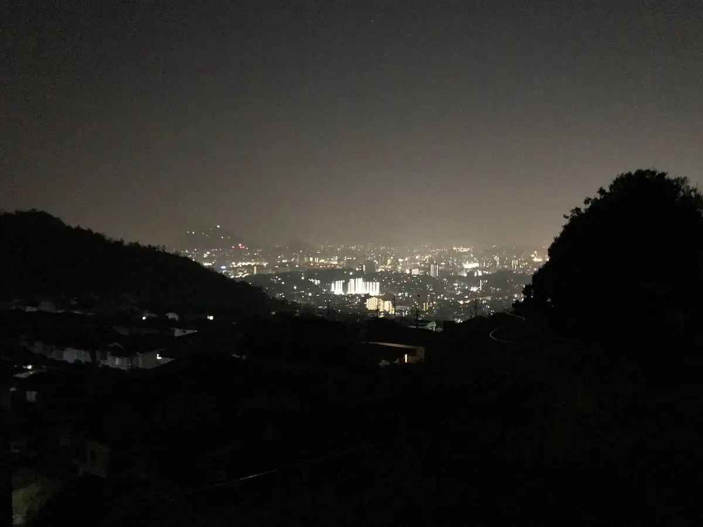
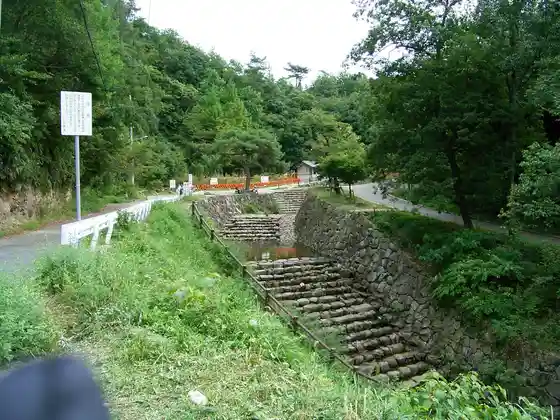
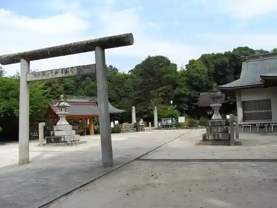
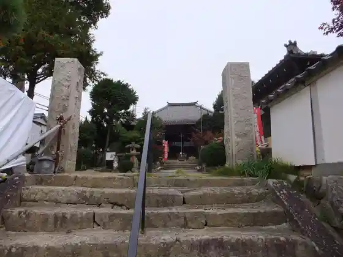

Japan / Hiroshima / Fuchu Town
Fuchu Town
Fuchu Town · Hiroshima
Fuchu Town
Highlighted on the Hiroshima map.

Stay
SOCIO RESIDENTIAL HOTEL (Soshio Rejidensharu Hotel)
Dining
Raku Warai Sakaba goji-goji Fuchu Town Mise
Ya Dai Zushi Koyo Ekimae Town
Teppan dining Chigiri
Taiwan Sho Kago Tsutsumi Ionmoru Hiroshima Fuchu Town Mise
Kan Kitchen Ariran Mama
Sumibi Yakiniku Man Maru Fuchu Town Main Shop
PEG
Tetsu Hachi
Batsuganmotsuaruto Soreiyu Mise
Biifuborukafe RYOMA
Izakaya Kintaro
Enja
Kogetsu Do Sanribu Fuchu Town Mise
Gotchin
Akashi
Jierato Workshop Porabea Ion Hiroshima Fuchu Town Mise
Sights
Suibun Kyo Forest Park

Ta Ie Shrine

Ionmoru Hiroshima Fuchu Town
Michitaka Tera

Aki Soja Ato